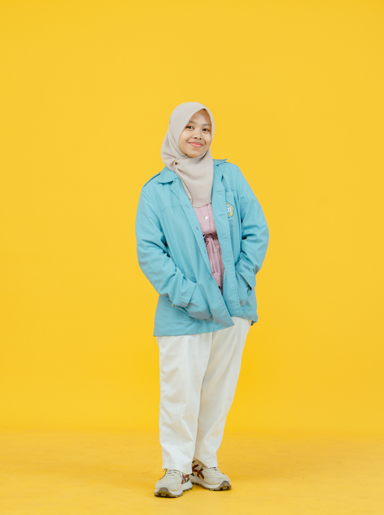

Domisili: Jebres, Surakarta, Jawa tengah
Address: Kencong, Jember, Jawa timur
About Me
Saya adalah lulusan Informatika dari Universitas Sebelas Maret yang memiliki minat dalam Software Engineering, Artificial Intelligence, Machine Learning, dan Data Science. Saya berpengalaman mengembangkan aplikasi web, membangun model machine learning, serta mengembangkan solusi berbasis AI untuk berbagai kebutuhan, mulai dari penelitian hingga implementasi di dunia industri.
Selain pengalaman profesional, saya juga aktif dalam penelitian dan berhasil mempublikasikan artikel pada jurnal internasional bereputasi terindeks Scopus Q3. Saya senang mempelajari teknologi baru, menyelesaikan permasalahan secara analitis, dan membangun solusi yang memberikan dampak nyata.